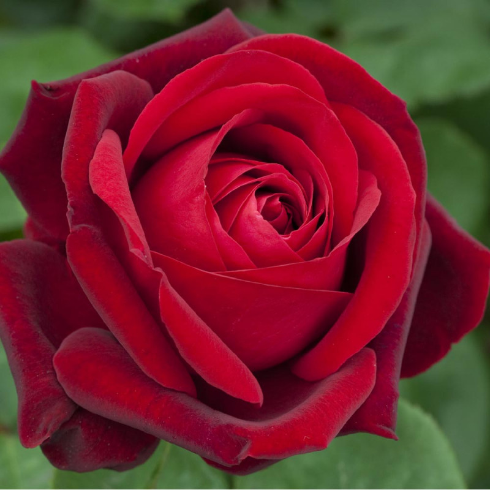
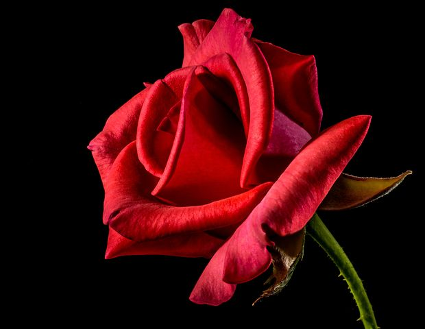

| famille : | Rosaceae | |
| espèces du genre : | Rosa |
LC : Préoccupation mineure Europe, France

La rose est la fleur du rosier, arbuste du genre Rosa et de la famille des Rosaceae. La rose des jardins se caractérise avant tout par la multiplication de ses pétales imbriqués, qui lui donne sa forme caractéristique. Appréciée pour sa beauté et sa senteur, elle est célébrée depuis l’Antiquité par de nombreux poètes et écrivains ainsi que par des peintres, pour son parfum et pour ses couleurs qui vont du blanc pur au pourpre foncé, en passant par le jaune et toutes les nuances intermédiaires. Elle est présente dans presque tous les jardins et dans de nombreux bouquets. Elle est devenue la « reine des fleurs » dans le monde occidental – la pivoine lui disputant ce titre en Chine. La rose est l’une des plantes les plus cultivées au monde et elle occupe la première place dans le marché des fleurs. Mais on oublie souvent que les rosiers sont aussi des plantes sauvages (le plus connu en Europe est l’églantier) aux fleurs simples à cinq pétales, qui sont devenus à la mode, pour leur aspect plus naturel, depuis quelques décennies sous le nom de « roses botaniques ». Les rosiers cultivés sont le résultat de plusieurs millénaires de transformations, d’abord empiriques puis, dès la fin du xviiie siècle, méthodiques, en particulier par l’hybridation. Les variétés sont innombrables, on estime à plus de 3 000 le nombre de cultivars disponibles actuellement dans le monde1. L’existence des roses remonte à bien avant l’antiquité, preuve en sont les fossiles retrouvés dans l’Ouest américain et datés de plus de 40 millions d’années.
|  |
|
 |
Les poètes Hésiode, Archiloque de Paros au vie siècle av. J.-C., Anacréon de Téos la chantaient déjà2. Puis Théophraste, au ive siècle av. J.-C., parle le premier de la culture de la rose dans son ouvrage Des odeurs3 et Histoire des plantes, où, au Livre I, il parle du rosier comme d'un sous-arbrisseau4. Au Livre II, il écrit qu'elles se reproduisent par fragments de tige5 ; au Livre IV, comparant ses boutons à ceux des grenades6 ; au Livre VI de Histoire des plantes, où il le définit comme sous-arbrisseau et « plante buissonnante »7 et lie le parfum des roses à leur terroir8 et au Livre IX9, pour mettre la couleur du laurier-rose en comparaison avec celle de la rose. Il comprend toutes les roses (ῥοδονίαι) sous la dénomination de « sauvage »10.
Le mot rose, attesté en français au début du xiie siècle11, remonte au latin rosa, rosae, substantif féminin qui désignait aussi bien la fleur que le rosier lui-même12. Par contre, l'étymologie du mot latin rosa est controversée : Friedrich Max Müller s'est opposé à une supposée origine sémitique du terme rosa13, ou encore l'omission par Émile Littré de l'arabe ward(a) « fleur(s) », wardi « rose » au profit du sanskrit vrad, alors que ce dernier mot signifie « adoucir ». Toujours est-il que les uns rattachent le mot latin au grec ancien rhódon14,10, éolique wrodion, lui-même, dit-on, emprunt à un vieux perse ºwurdi15, comparable à l’avestique varǝδa, sogdien ward, parthe wâr, tous au sens de « rose ». Et toujours selon cette même thèse, du vieux perse est aussi issue la racine sémitique, que l'on retrouve dans l’araméen wurrdā ou l’assyrien wurtinnu par exemple16. Ainsi le mot perse, d’où le persan gol, procèderait-il d’une racine indo-européenne ºwr̥dʰo continuée en latin par rubus « ronce ». Néanmoins, il faut souligner que dès 1822 Antoine Laurent Apollinaire Fée a remarqué que le ροζ (« rose ») grec pourrait bien dériver de l'arabe ورد ward17. En 1874, l'orientaliste William Wrighten a souligné textuellement que « werd n'est ni persan ni indo-européen mais arabe»18. Le linguiste français Michel Masson, en 1989, a non seulement démontré que la prétendue racine iranienne *wrd est sémitique, mais que le supposé dérivé grec de celle-ci « est plus probablement un emprunt à une langue sémitique »19,20. Et plus récemment encore[Quand ?], Jean- Claude Rolland a encore démontré à travers une «dissection » morpho-philologique du mot 20 que l'arabe ward ne doit rien au persan ni à l'indo-européen, mais est bien d'origine sémitique[réf. nécessaire]. Il est tentant de rapprocher rose de rosée mais cette similitude apparente, source d’inspiration inépuisable des poètes, est fortuite. Rosée procède, par l’intermédiaire d’un latin populaire ºrosata, du latin rōs, rōris (substantif masculin), issu d’une racine ºh₁rōs sans ºw initial. La rose est l’une des très rares fleurs ayant un nom dédié, différent des noms donnés à la plante elle-même : la rose est la fleur du rosier. Le succès de cette fleur lui vaut également de participer à l'appellation d'autres espèces sans lien avec la famille des Rosacées comme la rose de Noël (Helleborus niger) ou la rose de carême (Helleborus orientalis), Ranunculaceae), la rose de Chine (Hibiscus, Malvaceae), la rose de porcelaine (Etlingera elatior, Zingiberaceae), etc.
La description botanique, la génétique, l’origine, la distribution et la classification des espèces botaniques sont traités dans l’article rosier Les espèces botaniques de rosiers, qui appartiennent au genre Rosa, sont au nombre de 100 à 200 selon les auteurs et se répartissent en quatre sous-genres : Plathyrhodon, Hesperhodos, Hulthemia (parfois considéré comme un genre distinct) et Eurosa. Le sous-genre Eurosa est subdivisé en onze sections : Pimpinellifoliae (rosiers pimprenelle), Gallicanae (rosiers galliques), Caninae, Carolinae, Gymnocarpae, Cinnamomeae (rosiers cannelle), Chinenses, Banksianae, Laevigatae, Bracteatae et Synstylae. Les travaux de génétique montrent que cette classification ne reflète pas l'évolution des espèces de roses. Cette classification n'est donc utile que pour la détermination d'un rosier trouvé dans la nature. Seules une douzaine d’espèces et leurs taxons dérivés (variétés, formes), ont été utilisées pour créer la plupart des rosiers cultivés, généralement à fleurs dites « doubles » ou « pleines », aux très nombreux pétales. De plus en plus de formes « naturelles » sont cultivées dans les jardins, ce sont les « roses botaniques », dont la forme simple, semblable à l’églantine, et la rusticité s’accordent bien avec la tendance d'un jardin plus « sauvage ». Les rosiéristes modernes cherchent à exploiter la diversité du genre Rosa pour introduire dans leurs obtentions des gènes particuliers, par exemple de résistance au froid ou à certaines maladies.